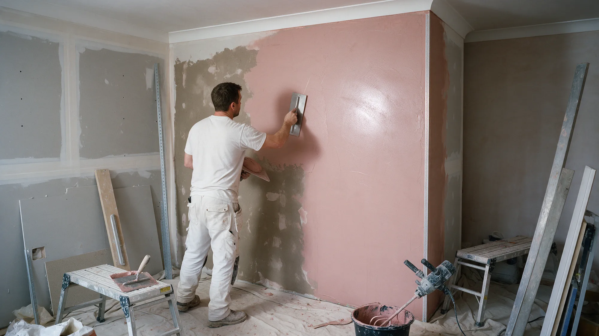
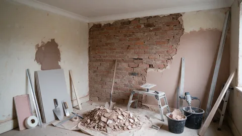
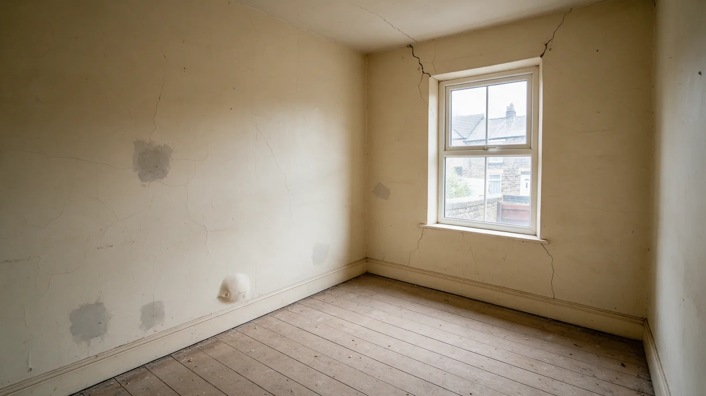
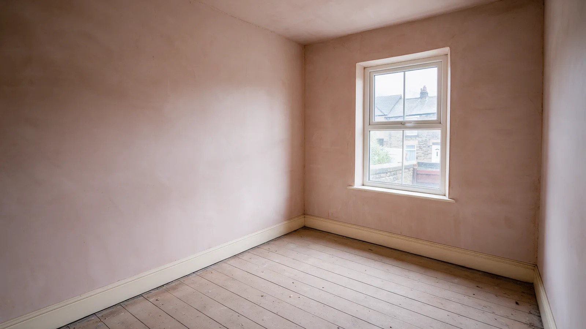
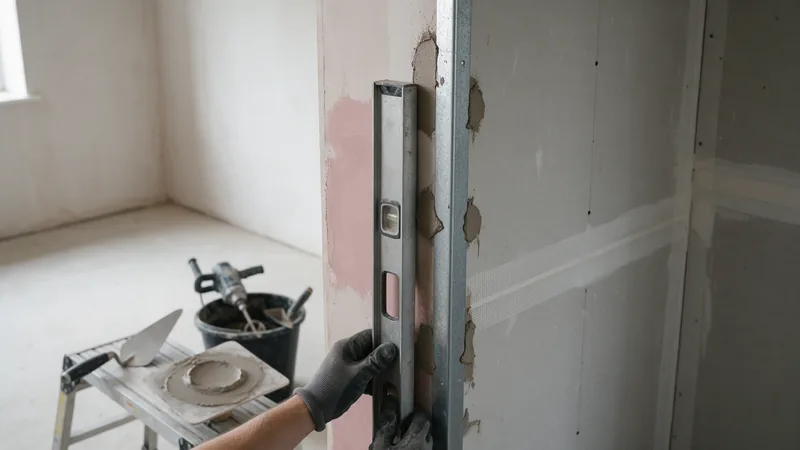
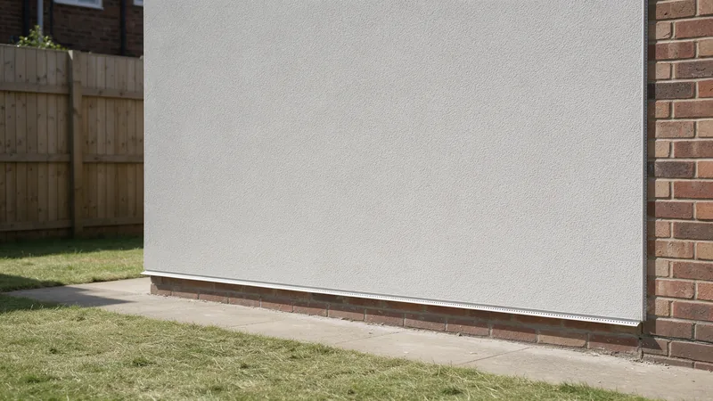
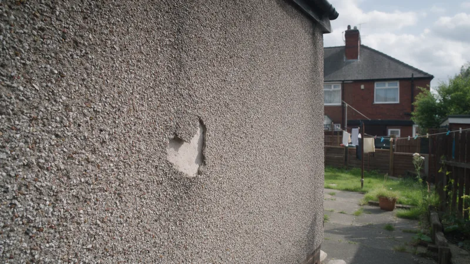
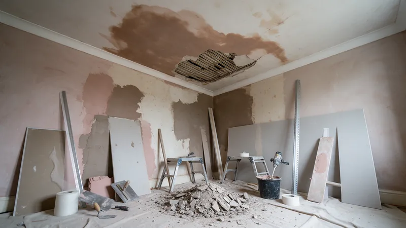
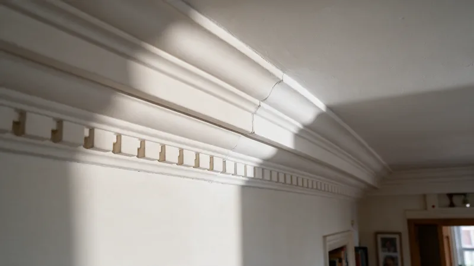
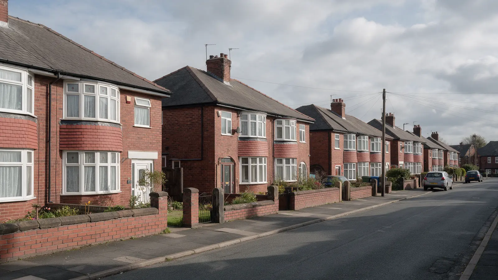

Plastering · Tameside
Flat walls,
and the truth about them.
Skimming, replastering, rendering, ceiling repairs, coving and cornice, dry lining and plasterboard. Half this trade is knowing which walls want a skim and which ones have to come off, and we will tell you which yours are.
Finishes
Four surfaces, drawn not photographed.
Polished skim
Inside walls and ceilings. Two or three millimetres, troweled as it goes off, flat enough that raking light shows nothing.
Sand and cement
Outside, in two coats on an older solid wall. An open grain, floated rather than polished, and it takes paint well.
Silicone thin coat
A tight even grain over a basecoat, coloured right through, so there is nothing to repaint in five years.
Pebbledash
Stone thrown into a wet bed. Tough, hides a lot, and the one finish nobody can patch so you cannot see it.
Surfaces drawn in the browser rather than photographed, so nothing here is pretending to be a product you can order.
What we do
Six kinds of job.
Skimming walls and ceilings
A thin finish coat over plaster that is already sound, two passes, flat enough that the light across it shows nothing.

Generated photoFull replastering
Old plaster off back to the brick, the background sorted, an undercoat ruled flat, then the finish. For walls a skim would only follow.
 Generated photo
Generated photoRendering
Sand and cement in two coats, or a modern silicone thin coat that comes coloured through. The wall underneath decides which.
 Generated photo
Generated photoCeiling repairs
A patch where a patch will hold, a new board and skim where the key has gone. After a leak, after artex, or after somebody else's.
 Generated photo
Generated photoCoving and cornice
Plain coving run and mitred so you cannot find the joints, or an ornate cornice matched and run back in by hand.
 Generated photo
Generated photoDry lining and plasterboard
Board on studs, battens or dabs, taped and skimmed. New walls, cold walls and ceilings that want starting again.
How it works
Four steps, and a knuckle on the wall.
You tell us what is there
A call, the chat box or the form. Which rooms, whether it is walls, ceilings or both, and what is on them now: paper, artex, old paint, bare brick. That is usually enough to know what we are looking at.
Somebody comes and taps them
Knuckles along every wall to find what is stuck and what has blown, a straight edge on the worst one to see how far out it is, and a look at what the background actually is. Twenty minutes to half an hour.
You get it in writing, room by room
What is being skimmed, what is coming off back to the brick, what is being left alone and why, and what is not included. Separate lines, so you can hold it against anybody else's.
We do it and clear up
Sheets down first, waste bagged and taken away, splashes off the skirtings while they are soft, and a straight answer about how long before you can paint it Sample.


Illustrative, not a real job. Both pictures were generated for this demo from the same room, once tired and once skimmed, so the window, the proportions and the floorboards are the same in each.
Before and after
A flat wall is a quiet wall.
Drag the slider. On the left, a crack running down from the corner of the window, four grey patches where sockets were chased in, and a bulge near the skirting. On the right, the same room skimmed out.
The thing worth noticing is that only one of those faults needed the wall taking off. The crack and the patches were surface, so they got filled and skimmed. The bulge sounded hollow when it was tapped, which means the plaster there had let go of the brick, and no amount of lovely finish on top of it would have stayed up. That wall came off. Knowing which is which is most of this trade, and it takes a knuckle rather than an opinion.
See the rest of the workOur work
Sample jobs.
 Generated photoSecond pass going onAshton-under-Lyne Sample
Generated photoSecond pass going onAshton-under-Lyne Sample Generated photoA room skimmed outHyde Sample
Generated photoA room skimmed outHyde Sample Generated photoThe corner and the revealStalybridge Sample
Generated photoThe corner and the revealStalybridge Sample Generated photoBack to the brickMossley Sample
Generated photoBack to the brickMossley Sample Generated photoUndercoat on bare brickDenton Sample
Generated photoUndercoat on bare brickDenton Sample
Generated photoBeads plumbed, then plasteredAshton-under-Lyne Sample Generated photoFloating a gableStalybridge Sample
Generated photoFloating a gableStalybridge Sample
Generated photoSilicone thin coat, finishedHyde Sample
Generated photoPebbledash letting goDenton Sample
Generated photoAfter a leak upstairsMossley Sample Generated photoReboarded overheadAshton-under-Lyne Sample
Generated photoReboarded overheadAshton-under-Lyne Sample
Generated photoCornice, before the repairStalybridge SampleEvery job here is a made up sample with a generated picture. Tap one to see it bigger.
Where we work
Based in Tameside.
Based in Tameside Sample. These are the towns we cover most. Coverage is a sample for this demo. A bit outside it? Ask anyway, it depends what else is on that week.

Generated photoWhat people say
Sample reviews.
Sample review
Two other firms quoted to skim over the front room. These tapped the walls, showed me where it sounded hollow and said two of them had to come off properly. Cost more and it was the right answer. Flat as a table now.
Priya, Ashton-under-Lyne
Sample review
Ceiling came down in the back bedroom after the bathroom leaked. Got told straight away to get the water and the electrics off before anything else, and they would not board it until it had dried out. No rushing.
Dean, Hyde
Sample review
Artex ceilings all through. They told me to get a sample tested before anybody touched them rather than just getting on with it, which nobody else had mentioned. Skimmed over them once it came back and you would never know.
Lorraine, Denton
Sample review
Old stone place, cold walls. They explained why gypsum was the wrong thing on them and did it in lime instead. Took longer and they said it would. Pleased they did not just use what was on the van.
Mark, Stalybridge
Made up for this demo. Skimwell does not exist, so neither do its customers.
Questions
What people ask us first.
How long until I can paint new plaster?
About five to seven days for a skim coat on a sound wall, and two to three weeks for anything thick: a wall taken back to brick, a bonded ceiling, a chimney breast. Heat and a bit of air moving help, so trickle vents open and doors ajar. What does not help is a radiator belting out next to it or a dehumidifier aimed at one wall, because the surface dries faster than the inside and that is how you get cracks.
Judge it by colour rather than by the calendar. It goes on dark red brown, dries patchy, then goes one even pale pink. While there is a single dark patch left, in a corner, behind a radiator, up at the ceiling line, it is still giving up water. When it is pale all over, the first coat is a mist coat: matt emulsion watered down by about a quarter to a third so it soaks in. Then two proper coats.
Can you skim over artex?
Usually yes, and it is the quieter of the two options. The high points get knocked back, it gets a coat of bonding agent so the plaster has something to grip, and then it takes a two coat skim. You end up with a flat ceiling and nobody has had to take the old coating off.
The important bit first though. Artex put on before the year two thousand can contain asbestos in the coating. It should be sampled and tested by a lab before anybody sands, scrapes or dry removes any of it, and that test is a small cost against the risk. If it comes back positive, taking it off is a job for a properly licensed firm and not for us, and we would say so rather than have a go. Skimming over tested artex that is sound and stuck down well is fine, because nothing gets disturbed.
Do you clean up after?
Yes. Sheets down before anything starts, the floor protected, anything that cannot be moved covered. At the end the floor is scraped and brushed, splashes come off the skirtings and the frames while they are still soft, buckets get washed out outside rather than in your sink, and the waste goes with us.
Plastering is wet work more than dusty work. The dust comes from two places: hacking old plaster off, and sanding, which we would rather avoid needing by finishing properly with the trowel. Where there is hacking off, the doorway gets sheeted and the doors shut, because fine dust travels through a house. What is not realistic is pretending a house looks untouched while a room is being replastered, so we tell you what to expect first.
Do I need to empty the room?
Clear it rather than empty it. For a ceiling, everything underneath has to come out, because we are working overhead off a hop up and we need the floor. For walls, about a metre and a half clear all the way round, so wardrobes come off the walls and anything hanging on them comes down. Small things, curtains, blinds and poles are better out of the room altogether.
Carpet is worth lifting if a whole room is being done, because plaster splashes and a wet sheet are not kind to one. Hard floors can stay under sheets and boards. You can normally stay in the house while one room is done if it is shut off.
Render or pebbledash: what is best?
Depends what the wall is doing, not on which looks nicer. Pebbledash is stone thrown into a wet render bed. It is tough and it hides a lot, which is why half the houses round here have it, but once water gets behind it, it lets go in patches and it is almost impossible to patch invisibly. It also holds dirt and goes green on a shady wall.
A modern silicone thin coat goes on thinner over a basecoat and is coloured through, so there is nothing to repaint, and it sheds water and dirt well. Sand and cement in two coats is still a sound answer on an older solid wall and it takes paint. The honest answer is that the finish matters less than the background: if the existing render is blown or the wall is damp, that gets sorted first, because anything put over a loose background comes off with it.
Can you fix one patch rather than the whole wall?
Sometimes, and we will tell you when. A small patch where a socket has been moved or a shelf has pulled out is a straightforward make good. The trouble with patching a larger area is that a patch is a different age and a different thickness to what is round it, so in raking light you can often still find it even when it is done well.
On a wall that is going to be papered it matters less. On a wall that will be painted in a pale colour, with a window at one end, a big patch usually shows. In that case skimming the whole wall costs a bit more and is the thing that actually looks right.
Will new plaster crack?
Fine hairline cracks in the first few weeks are common and are nearly always drying shrinkage rather than anything wrong. They fill with the mist coat and the first proper coat, or with a smear of filler. What is not normal is a crack that keeps opening, one that runs in a straight line along a joint, or one you can get a fingernail into.
Those come from movement rather than from plaster: a stud wall flexing, a ceiling joint with no tape in it, a new extension settling, or timber drying out. The fix is to deal with what is moving. Plastering over it again just resets the clock.
Do you work in old houses with lime plaster?
Yes, and it genuinely matters. A solid walled house with no cavity was built to let moisture move through the wall and out again. Lime plaster lets it. Hard gypsum and cement do not, so the water goes somewhere else instead and usually shows up as damp lower down or on the other side of the wall.
Lime takes longer, it costs more, and fewer firms do it. On a stone cottage or a pre war solid wall we would say so at the visit rather than quietly using what is on the van. If the house is a modern cavity walled one, gypsum is right and lime would be an expensive affectation.
General guidance written for this demo from trade knowledge, not advice on your house.
Advice
Worth reading first.
 Generated photo
Generated photoHow long new plaster takes to dry before painting
Why the calendar is the wrong guide, what the colour is telling you, and why the first coat of paint is not a normal coat of paint.
 Generated photo
Generated photoArtex: skim over or remove?
Two honest options, one thing that must be tested before anybody touches it, and the job nobody should do on a guess.
 Generated photo
Generated photoWhat a sagging ceiling is telling you
A bulge, a brown ring or a line of nails showing through. What each one means and which of them will not wait.
About this demo
What this demo shows.
Skimwell is not a real firm. The site is here to show a plastering firm what Clockwork AI builds, in six parts.
No prices here. What it would cost for your firm is a conversation, not a web page. The Clockwork number is in the bar at the top.
Shall somebody come and tap the walls?
Tell us which rooms and your postcode and we will come and look at what is actually on them. If a ceiling has come down or there is water coming through, use the urgent line instead.